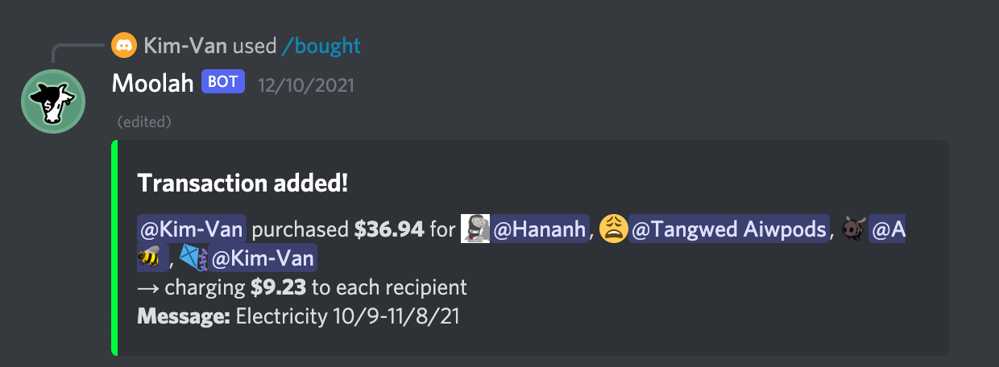
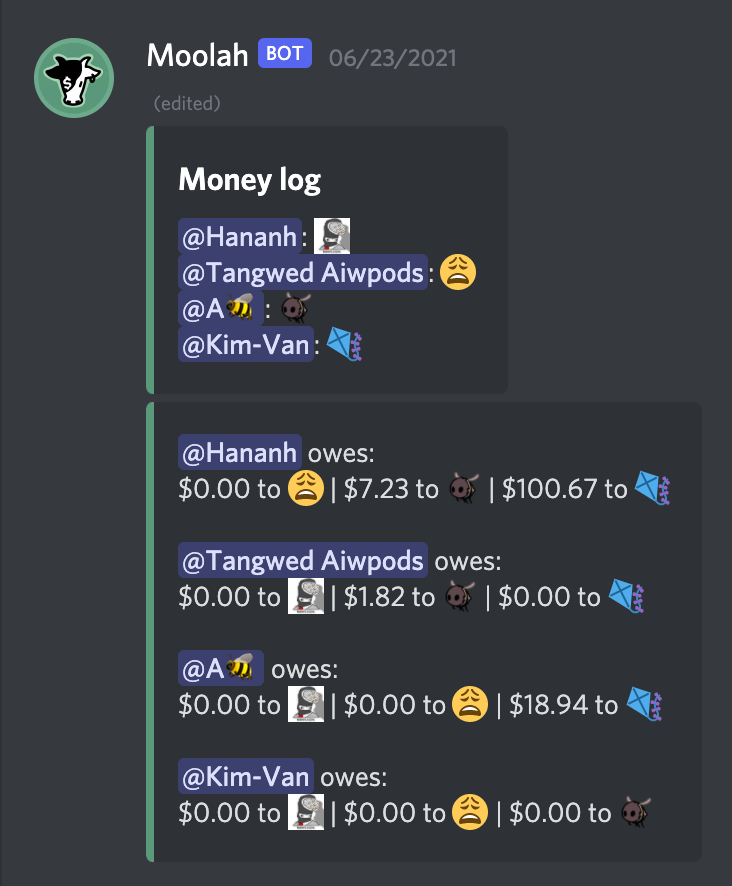
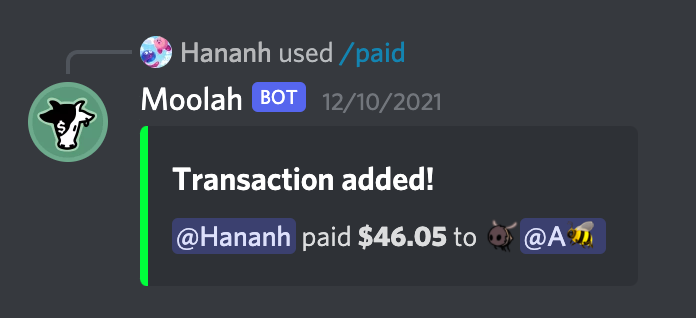
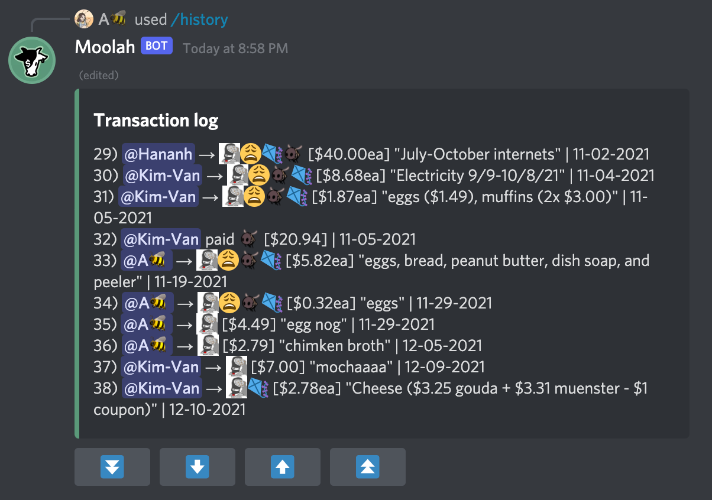
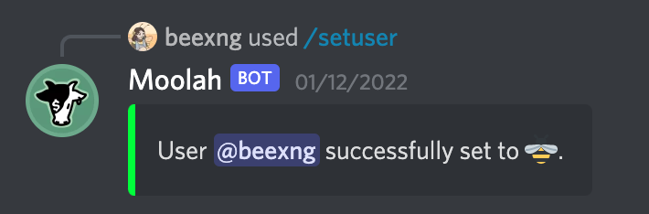
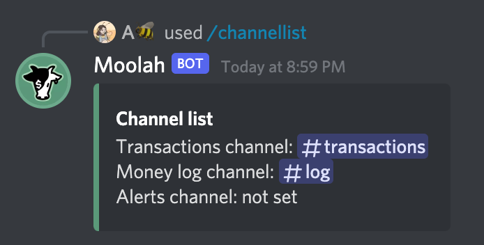
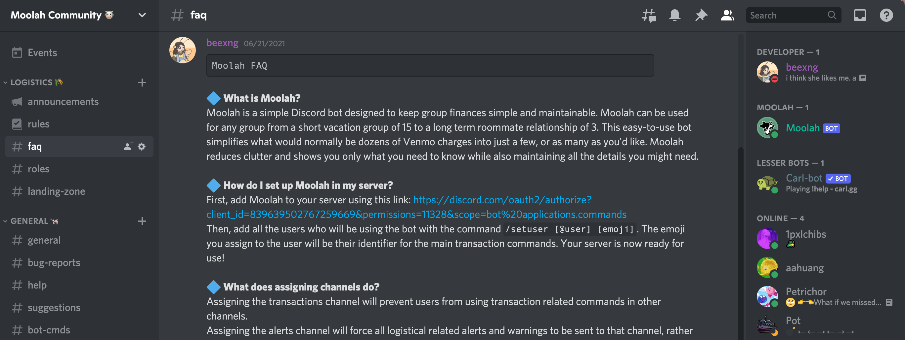
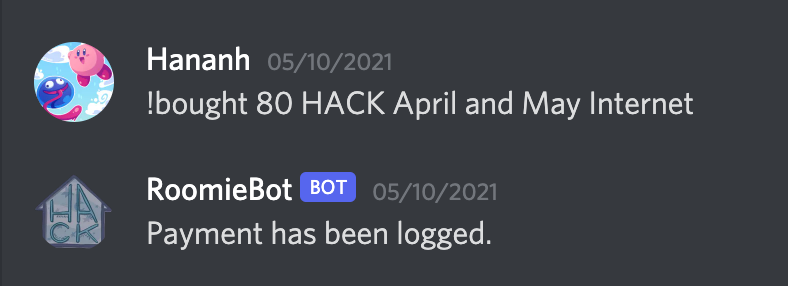

The Discord bot designed to help keep group finances simple. Moolah can be used for any group from a short vacation group of 15 to a long term roommate relationship of 3. This easy-to-use bot simplifies what would normally be dozens of Venmo charges into just a few, or as many as you'd like. Moolah reduces clutter and shows you only what you need to know while also maintaining all the details you might need.
Using simple commands, transactions can easily be logged, deleted, and reviewed, all while using a non-intrusive edited logging embed to always display the overall charges for the group.
Moolah is a project which I started working on during the summer of 2020 in my free time. It was originally called RoomieBot and was personalized specifically for me and my roommates. It was bug-ridden, but it worked enough for the four of us. However, when the summer of 2021 rolled around, I decided I wanted to challenge myself to make this bot better than ever, and I worked hard to design it in a manner that's easy for new users to understand so that anyone could set it up if they wanted to. Moolah is on its final iteration, and I hope to continue to maintain it as it grows in its userbase.
Top.gg GitHub Try me!See below for some examples of Moolah in use.
     The Moolah Community is a Discord server to help new users with any questions they have about the bot.
Before Moolah was RoomeieBot, a significantly less nuanced bot.
